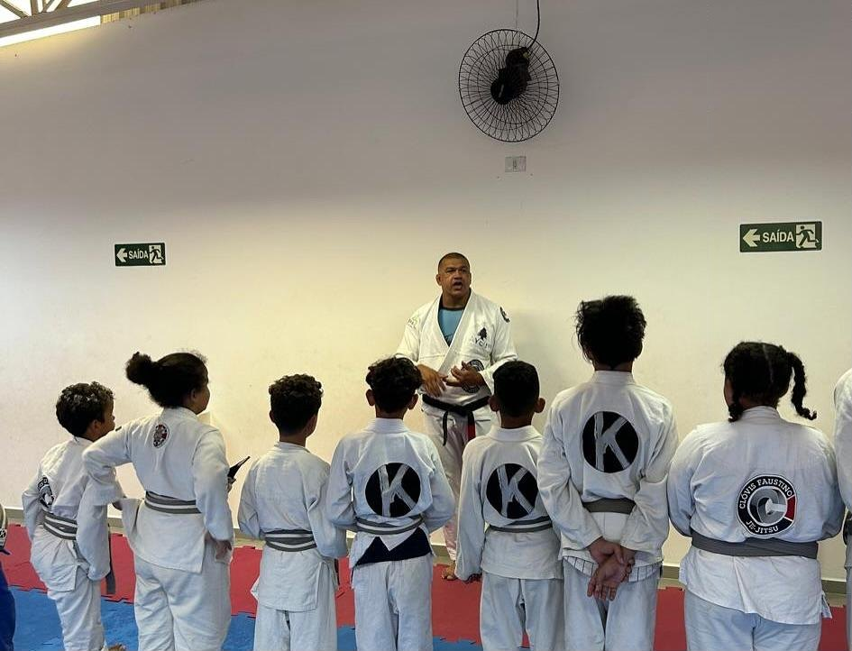
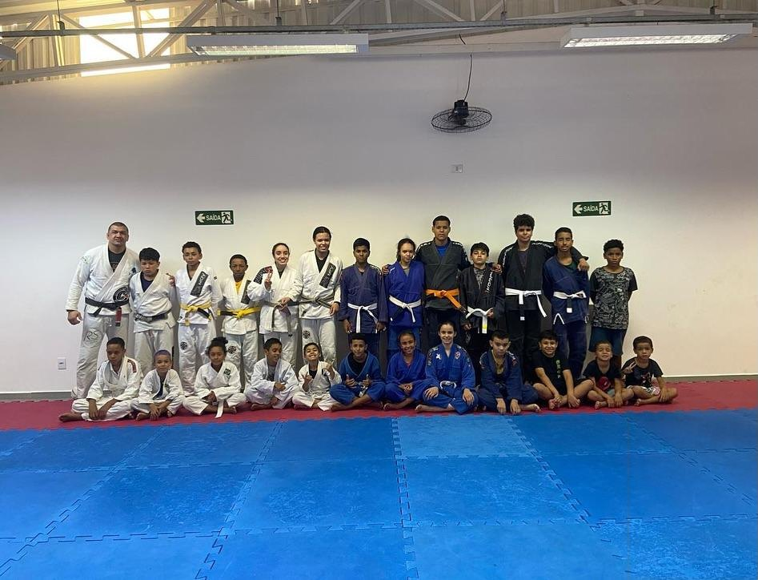
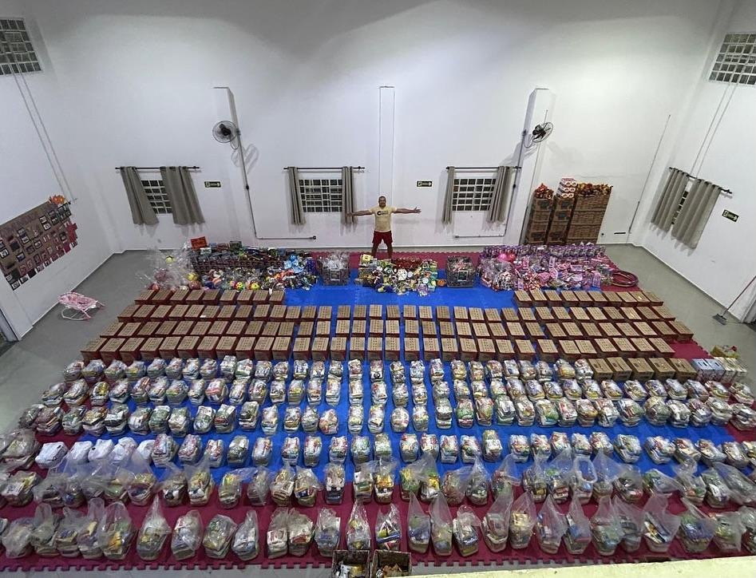

Fotos que precisamos
O site tem sete posições de foto. As que já aparecem são provisórias, tiradas do Instagram do projeto, e servem para avaliar a posição de cada imagem. Para a versão final, precisamos dos arquivos originais.
Na prévia do site, cada foto aparece com o mesmo número desta lista.
-

Foto 1: abertura
Onde entra: no topo da página inicial, ao lado do título. É a maior foto do site.
O que precisamos: uma foto horizontal e ampla de aula no tatame, na altura dos olhos, de preferência uma dupla aprendendo um movimento com o professor por perto. O lado esquerdo fica coberto pela faixa dourada, então o assunto deve estar do centro para a direita.
Hoje: foto provisória do Instagram, em resolução baixa.
-

Foto 2: jiu-jítsu
Onde entra: página inicial, em Atividades.
O que precisamos: uma foto horizontal de treino em dupla, com as crianças em ação.
Hoje: foto provisória do Instagram, em resolução baixa.
-

Foto 3: inglês
Onde entra: página inicial, em Atividades, ao lado da foto do jiu-jítsu.
O que precisamos: uma foto horizontal da aula de inglês, com as crianças conversando ou escrevendo.
Hoje: foto provisória do Instagram, em resolução baixa. Confirmar se esta é mesmo da aula de inglês.
-

Foto 4: entrada do espaço
Onde entra: página inicial e página Como participar.
O que precisamos: uma foto da entrada ou da fachada do local das aulas, para a família reconhecer na chegada.
Hoje: no lugar dela está uma foto provisória do café da manhã.
-
Ainda sem foto
Foto 5: retrato de Clóvis
Onde entra: página inicial, em Quem faz o Vassoural, e página Quem somos.
O que precisamos: um retrato de Clóvis no tatame do projeto, horizontal, olhando para a câmera ou dando aula.
Hoje: sem foto.
-
Ainda sem foto
Foto 6: visita de Lucas Sakae
Onde entra: página inicial, em História da turma.
O que precisamos: uma foto horizontal da aula que Lucas Sakae deu no projeto, com a turma.
Hoje: sem foto.
-

Foto 7: cestas ou Truco Solidário
Onde entra: página inicial, em Como apoiar.
O que precisamos: uma foto de bastidores: a montagem das cestas ou o torneio de truco.
Hoje: foto provisória do Instagram, em resolução baixa.
Como enviar
- Arquivo original da câmera ou do celular, sem passar pelo WhatsApp, que reduz a qualidade.
- Foto horizontal (deitada), com pelo menos 1600 px de largura.
- Sem texto, logo ou moldura por cima da imagem.
- Dizer o número da posição de cada foto, por exemplo "Foto 2".
Também precisamos do logo original em arquivo vetorial (SVG, AI ou PDF). O logo do site foi redesenhado a partir de um print.